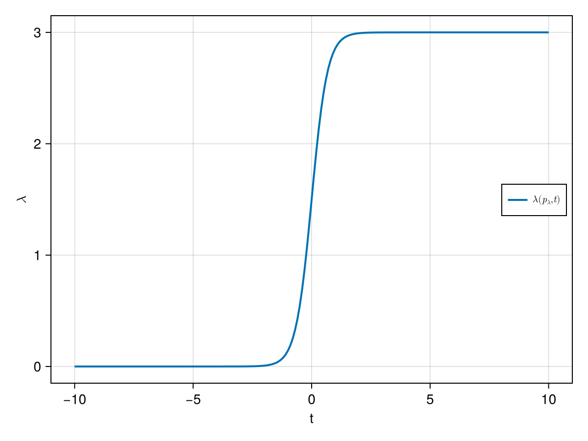
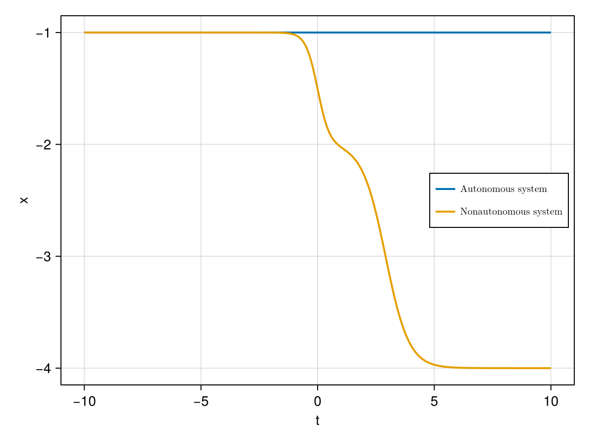

Setting up a RateSystem: a prototypical model for R-tipping
Let us explore an example of how to construct a RateSystem from an autonomous deterministic dynamical system (i.e. a CoupledODEs) and a time-dependent forcing protocol called RateProtocol.
We first consider the following simple one-dimensional autonomous system with one attractor, given by the ordinary differential equation:
\[\begin{aligned} \dot{x} &= (x+\lambda)^2 - 1 \end{aligned}\]
The parameter $\lambda$ shifts the location of the extrema of the drift field. We implement this system as follows:
using CriticalTransitions
using CairoMakie
function f(u,p,t) # out-of-place
x = u[1]
λ = p[1]
dx = (x+λ)^2 - 1
return SVector{1}(dx)
end
lambda = 0.0
p = [lambda]
x0 = [-1.]
auto_sys = CoupledODEs(f,x0,p)1-dimensional CoupledODEs
deterministic: true
discrete time: false
in-place: false
dynamic rule: f
ODE solver: Tsit5
ODE kwargs: (abstol = 1.0e-6, reltol = 1.0e-6)
parameters: [0.0]
time: 0.0
state: [-1.0]
Non-autonomous case
Now, we want to explore a non-autonomous version of the system. We consider a setting where in the past and in the future the system is autnonomous and in between there is a non-autonomous period $[t_start, t_end]$ with a time-dependent parameter ramping given by the function $\lambda(rt)$. Choosing different values of the parameter $r$ allows us to vary the speed of the parameter ramping.
We start by defining the function $\lambda(t)$:
function λ(p,t)
λ_max = p[1]
lambda = (λ_max/2)*(tanh(λ_max*t/2)+1)
return SVector{1}(lambda)
end
λ_max = 3.
p_lambda = [λ_max] # parameter of the function lambda1-element Vector{Float64}:
3.0We plot the function $λ(p_lambda,t)$
lambda_plotvals = [λ(p_lambda, t)[1] for t in -10.0:0.1:10.0]
figλ = Figure(); axsλ = Axis(figλ[1,1],xlabel="t",ylabel=L"\lambda")
lines!(axsλ,-10.0:0.1:10.0,lambda_plotvals,linewidth=2,label=L"\lambda(p_{\lambda}, t)")
axislegend(axsλ,position=:rc,labelsize=10)
figλ
Now, we define the RateProtocol that describes how and when the function $λ(p_lambda,t)$ is used to make autonomous system non-autonomous:
r = 4/3-0.02 # r just below critical rate 4/3
t_start = -Inf # start time of non-autonomous part
t_end = Inf # end time of non-autonomous part
rp = CriticalTransitions.RateProtocol(λ,p_lambda,r,t_start,t_end)RateProtocol(Main.λ, [3.0], 1.3133333333333332, -Inf, Inf)Now, we set up the combined system with autonomous past and future and non-autonomous ramping in between:
t0 = -10. # initial time of the system
nonauto_sys = apply_ramping(auto_sys,rp,t0)1-dimensional CoupledODEs
deterministic: true
discrete time: false
in-place: false
dynamic rule: f
ODE solver: Tsit5
ODE kwargs: (abstol = 1.0e-6, reltol = 1.0e-6)
parameters: [3.0]
time: -10.0
state: [-1.0]
We can compute trajectories of this new system in the familiar way:
T = 20. # final simulation time
auto_traj = trajectory(auto_sys,T,x0)
nonauto_traj = trajectory(nonauto_sys,T,x0)(1-dimensional StateSpaceSet{Float64} with 201 points, -10.0:0.1:10.0)We plot the two trajectories
fig = Figure(); axs = Axis(fig[1,1],xlabel="t",ylabel="x")
lines!(axs,t0.+auto_traj[2],auto_traj[1][:,1],linewidth=2,label=L"\text{Autonomous system}")
lines!(axs,nonauto_traj[2],nonauto_traj[1][:,1],linewidth=2,label=L"\text{Nonautonomous system}")
axislegend(axs,position=:rc,labelsize=10)
fig
Author: Raphael Roemer
Date: 30 Jun 2025